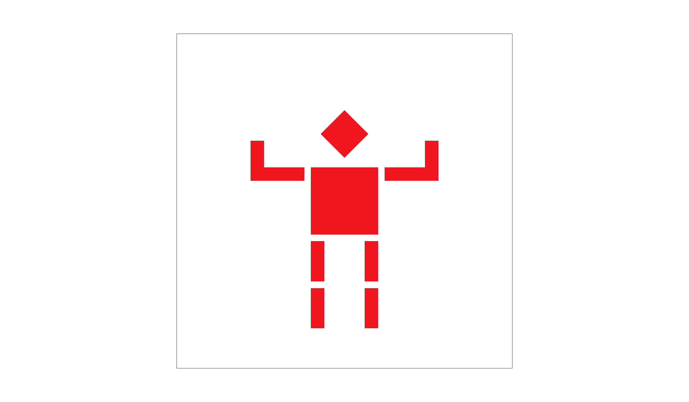
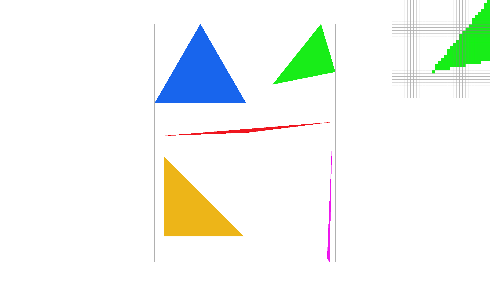
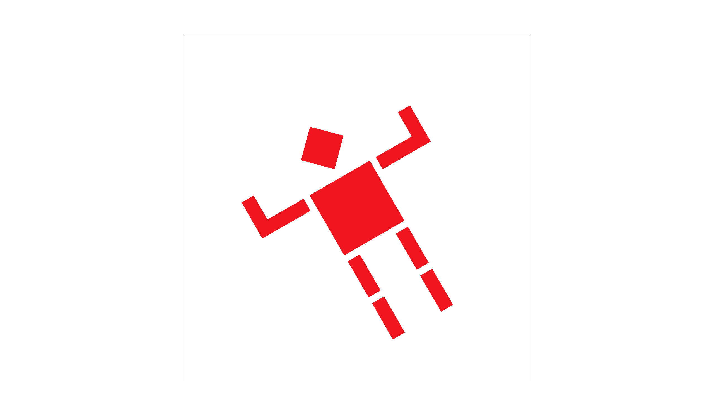
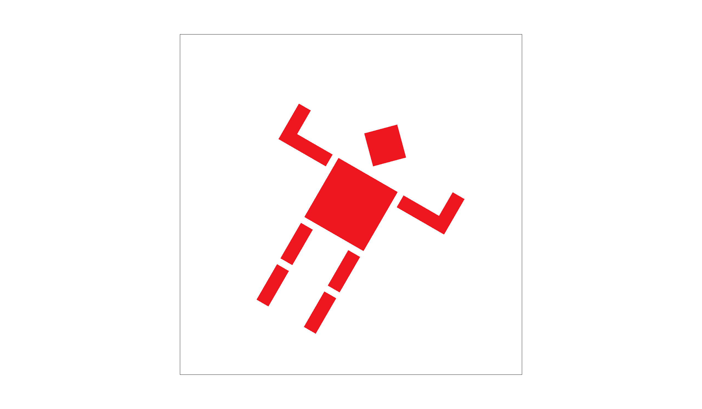
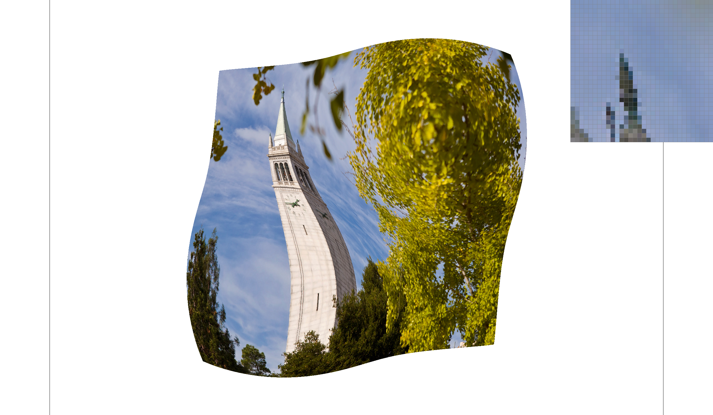
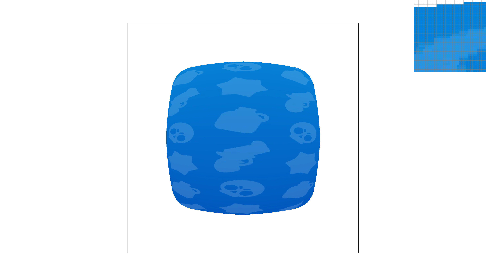

CS 184 Homework 1 Write-Up
Task 1. Drawing Single-Color Triangles
First, we check that all the triangles' vertices are ordered in the counterclockwise direction by computing
if \(k=(x_1-x_0) * (y_2-y_1) - (y_1-y_0) * (x_2-x_1)\). If \(k < 0\), we swap \(x_1\) and \(x_2\),
and \(y_1\) and \(y2\) to ensure that the vertices are ordered correctly. This will ensure that when we take the
dot product to determine if a pixel is inside the triangle, the sign of the result will be consistent
with the winding order. Next, we compute the bounding box for the triangle by taking the minimum and maximum values
of the \(x\) and \(y\) vertices, and iterate over each pixel in the bounding box.
For each pixel in the bounding box, a sample point is taken at its center, at coordinates \((x + 0.5, y + 0.5)\).
At this point, an inside-triangle test is performed for every sample. If the sample lies within the triangle, the
color that was passed onto the rasterizer is written to the sample buffer at the sample point.
Our algorithm is no worse than the brute-force method of checking every sample in the bounding box, as it inherently
tests only the pixels where the triangle can possibly appear.
A screenshot of our rendered triangle is shown below:

Animated Cubeman (my_robot.svg)
Task 2. Antialiasing by Supersampling
Supersampling helps reduce aliasing by capturing partial coverage at triangle edges. We maintain a high-resolution
sample buffer RasterizerImp::sample_buffer that holds floating point color values for each subpixel.
For a framebuffer of dimensions width × height and a sample rate \(s\) (a perfect square),
the buffer stores width × height × \(s\). As the user changes the sample rate, the buffer
is resized accordingly.
In our rasterize_triangle function, we compute the bounding box of the triangle and iterate over each pixel.
Within each pixel, we subdivide into a \(\sqrt{s} \times \sqrt{s}\) grid. The position of each subpixel is calculated as:
sample_pos \(=\) pixel coordinate × \(\frac{2i + 1}{2\sqrt{s}}\) where i is the subpixel index.
Each subpixel that passes the inside-triangle test is colored, and during the resolve phase, all subpixel colors are
averaged to produce a smooth, antialiased pixel color.
Comparisons of sample rates 1, 4, and 16 illustrate how supersampling smooths out edges.

Supersampling, 1 Sample/Pixel
Supersampling, 4 Samples/Pixel
Supersampling, 16 Samples/Pixel
Task 3. Transforms
For this task, the robot SVG file is updated to the cubeman the cubeman flexes with both arms raised.
Extra Credit: We enabled viewport rotation via key bindings. Each rotation rotates the viewport
by \(\frac{\pi}{6}\) radians. Pressing the [R] key rotates it to the right, and [E] key rotates it to the left.
Given rotation degree \(d\) in radians, the rotation is applied with the transformation matrix:
$$
\begin{pmatrix}
\cos(d) & -\sin(d) & 0 \\
\sin(d) & \cos(d) & 0 \\
0 & 0 & 1
\end{pmatrix}
$$
This matrix is incorporated into the transformation pipeline to rotate the SVG about its center. Specifically,
I created a translation matrix that moves the SVG to the origin, a rotation matrix that rotates the SVG, and a
translation matrix that moves the SVG back to its original position. These matrices are multiplied together and
applied before the ndc_to_screen and svg_to_ndc matrices in DrawRend::redraw function.

My Robot (Rotated left by 30˚)

My Robot (Rotated right by 30˚)
Task 4. Barycentric coordinates
Barycentric coordinates allow us to express any point \(P\) within a triangle as a weighted sum of its vertices \(A\), \(B\), and \(C\).
Then, any point \(P\) can be expressed as:
$$ P = \alpha A + \beta B + \gamma C $$
With the constraint \( \alpha + \beta + \gamma = 1 \) and \( \alpha, \beta, \gamma \geq 0 \).
Here, the weights \(\alpha\), \(\beta\), and \(\gamma\) are the barycentric coordinates of \(P\). In computer graphics, this system is
incredibly useful because these weights can be directly used to interpolate vertex attributes, such as colors, texture coordinates,
and normals, across the triangle. In our rasterizer, we compute these coordinates by inverting a \(3 \times 3\) matrix built from the
vertex positions. Multiplying the sample points by the inverse matrix yields the barycentric coordinates for that sample point. This
matrix is computed as follows:
$$
M=\begin{pmatrix}
x_0 & x_1 & x_2 \\
y_0 & y_1 & y_2 \\
1 & 1 & 1
\end{pmatrix}^{-1}
$$
This matrix is used to compute the barycentric coordinates for each sample point in the triangle. The barycentric coordinates for
a given coordinate \((x, y)\) are then computed by multiplying the sample point by the inverse matrix. The resulting coordinates
are then used to interpolate the vertex attributes across the triangle.
The following diagrams demonstrates this implementation.
Task 5: "Pixel Sampling" for Texture Mapping
In texture mapping, pixel sampling is the process of determining the final color of a pixel by "sampling" the texture image at the
corresponding texture coordinates. When we map a 2D texture onto a triangle, each pixel inside the triangle gets a texture coordinate
\((u,v)\) by interpolating the per-vertex texture coordinates. The texture color is then determined by sampling the texture image at
these coordinates.
In nearest neighbor sampling, we simply convert the continuous texture coordinate into a discrete texel coordinate by rounding.
For example, given a texture coordinate \((u, v)\), we multiply by the texture's width and height respectively, then round to the nearest integer.
This method is very fast and easy to implement (as shown in our Texture::sample_nearest function), but it can produce a "blocky" or
pixelated appearance. This is especially noticeable when the texture is magnified or when there are abrupt changes in the texture's content.
Bilinear sampling improves upon nearest neighbor by taking into account the four texels that surround the given texture coordinate.
After computing the integer part (using floor) and the fractional part of the coordinate, we perform a weighted average of the
four neighboring texels. In our Texture::sample_bilinear function, we:
- Compute the integer texel coordinates \((x, y)\) from the texture coordinate \((u, v)\).
- Compute the fractional part of the texture coordinate \((u_{ratio}, v_{ratio})\).
- Compute the bilinear interpolation of the four neighboring texels using the ratio computed above.
The result is a smooth blend that avoids the sharp transitions seen with nearest neighbor sampling.
In our rasterizer, barycentric coordinates are used to interpolate the \((u,v)\) coordinates. Then, based on the selected sampling method, either sample_nearest or sample_bilinear is called to fetch the texture color.

Nearest Sampling, 1 Sample/Pixel
Nearest Sampling, 16 Samples/Pixel
Bilinear Sampling, 1 Sample/Pixel
Bilinear Sampling, 16 Samples/Pixel
Task 6. "Level Sampling" with Mipmaps for Texture Mapping
To reduce aliasing in texture mapping, we use mipmaps—precomputed, downscaled versions of the full-resolution texture.
The idea is to select (or blend between) mip levels based on how rapidly the texture coordinates change across the screen.
To implement this, we need the partial derivatives of the texture coordinates with respect to screen-space \(x\) and \(y\).
We calculate these derivatives in RasterizerImp::rasterize_textured_triangle and pass them to Texture::get_level.
This function computes the mipmap level based on the derivatives and the selected level sampling mode. This partial derivative is
calculated by first computing the barycentric coordinates of the texture coordinates at \((x, y)\), \((x+1, y)\), and \((x, y+1)\).
The difference vectors are then scaled by the texture's width and height to get the partial derivatives. Then, the mipmap level
is calculated using the formula:
$$
L = \log_2 \Bigl(
\max\Bigl(
\sqrt{\Bigl(\frac{\partial u}{\partial x}\Bigr)^2
+ \Bigl(\frac{\partial v}{\partial x}\Bigr)^2},
\sqrt{\Bigl(\frac{\partial u}{\partial y}\Bigr)^2
+ \Bigl(\frac{\partial v}{\partial y}\Bigr)^2}
\Bigr)
\Bigr).
$$
Here, we take the norm of the two vectors and choose the larger of the two. The norm measures how quickly the texture coordinates
change across the screen. The logarithm of this value gives us the mipmap level to sample from. We then use this level to fetch
the texture color using the selected level sampling method. There are three level sampling methods:
-
L_ZERO: Always use mip level 0 (full resolution). This is fast but can produce aliasing artifacts when the texture
is minimized.
-
L_NEAREST: Round \(L\) to the nearest integer and sample from that mip level. This reduces aliasing artifacts,
though the transition between levels can be abrupt. This method is faster than linear sampling.
-
L_LINEAR: Blend between the two integer mip levels around \(L\) using a weighted sum. This method produces the
smoothest results but is the slowest. When combined with bilinear pixel sampling, this is known as trilinear filtering.
To integrate level sampling into the rasterizer, we updated the
Texture::sample function to support the three level sampling methods.
Then in
RasterizerImp::rasterize_textured_triangle, we calculate the partial derivatives and pass them to
Texture::sample,
which uses
Texture::get_level to determine the mip level to sample from. Then, the texture color is fetched using the selected
level sampling method.
Overall, L_ZERO is the fastest and uses minimal extra memory, but can exhibit significant aliasing in minified areas.
L_NEAREST offers improved quality by choosing an appropriate mip level, though level transitions may be noticeable.
L_LINEAR provides the smoothest appearance at the cost of extra texture lookups and blending operations.
The following images show the same texture mapped onto a triangle using different level sampling methods and pixel sampling methods.

L_NEAREST & P_NEAREST

L_NEAREST & P_LINEAR